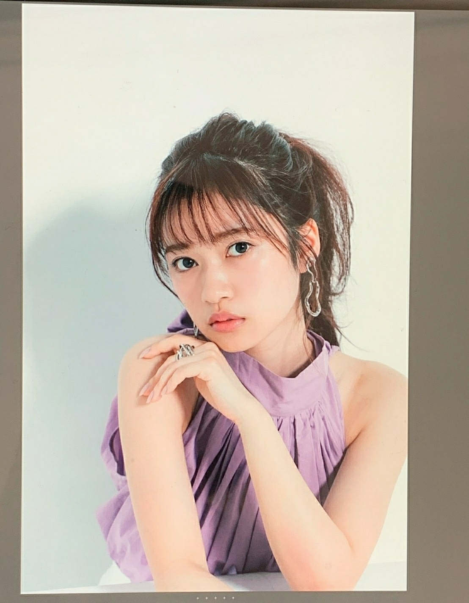
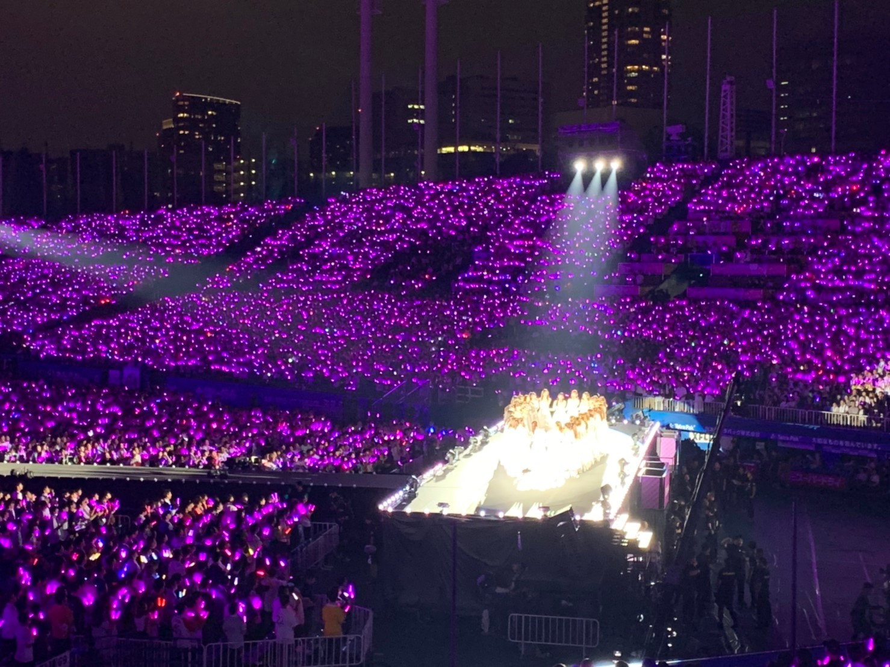

2019/0917Tue全てに意味がある
お疲れ様です
沢山の応援ありがとうございます！
今年もあっという間に
毎年ツアーが終わり
この後はもう、一瞬で年が明けてしまうイメージ
残り数ヶ月も体調、健康、安全を第一に
皆さんと楽しみたいです。
生駒さんにも直接言えたのですが
乃木坂46
1期生の大好きな皆さんに
乃木坂46の2期生として会えて良かったって
久々に卒業生の顔を見たら泣いちゃいました。
人前で泣くの好きじゃないですし
玲香さんも皆の笑顔が見たいからって何回も言っていたので
ライブ中は笑顔を心掛けてたのですが、堪えられなかったシーンもありました。
先輩達は可愛いだけでなく
個性、自分の意思を持ってる方達で
私の自慢です。
今年はドームツアーに
神宮球場で3日間
沢山沢山ありがとうございました☺️
皆さんの応援のお陰で色んな景色を見させてもらって人生が豊かになっています。
どこか夏らしくはないと勝手に思い込んでいるのですが
ブランコを神宮球場で白石さんが披露してくれました！
ブランコ好きだからと言ってくれて
そしたら、横にいた松村さんが
まちゅの方が好きやしーって
確かに、ずっと言ってくれている気がする
メンバーに誉められると嬉しいものです。
こんなに良い曲を
歌えてそしてセンターというポジションを何度も色んなテイストの曲でつとめさせてもらえてること
このツアーの企画で改めて誇りに思えました☺️
そしてもうひとつ今年変わったこと
全体を通しても2曲もセンターとして
披露させていただきました。
個人としては
色んな面の自分も出せる
滑走路
ここにいる理由
見て貰える機会があって良かったなーと☺️
これを機にまた沢山の出会いがありますように
いっぱい感想はありますが
嬉しかったことだけ
捉え方は人それぞれだと思います。
だから、私からは
皆さんにとっての夏の思い出を一緒に作れた、楽しかったと思ってもらえているなら何よりです。☺️
玲香さんも仰ってたけど
乃木坂46を離れても乃木坂46を作っていく人だと
乃木坂46の良いところは
辞めても乃木坂46を大切に、誇りに思ってることだと思いました。
ずっと繋がってる感じが心地好いです。
だからこそ、皆のホームである
乃木坂46を大切にしたいです。
沢山の愛をありがとう☺️
ハート柄
握手会もありがとうございました☺️
生誕祭や昨日の事はまた改めて


むらさき☺️！
2019/09/17 13:12


コメント(445)
おめでとう
生誕祭もすごく良かった！
今年も蘭世にとっていい一年でありますように
そー
また後でしっかり読んでコメントするね！
大好きやでー
蘭世に会えるのめちゃめちゃ楽しみ！
やっぱり蘭世と話せるの幸せ
また11月楽しみにしているよ
握手会のときはよろしくお願いします！
名古屋の握手会楽しかったよー！
生誕祭行けなくてごめんね！
あと約1週間20歳楽しんでね！
蘭世がセンターしてる曲は特に輝いてたよ！！
頑張り続ける姿がホントにかっこいいと思う！これからもめっちゃ応援するね！！頑張れ！！
ツアーもお疲れ様でした！いろんな蘭世を見れてよかったです！
またコメントしますね！
今年の夏は、ライブでめっちゃ楽しく過ごすことができました
蘭世センターの滑走路最高です！
握手会でも言わせていただきましたが、お誕生日おめでとうございます
蘭世さんにとって素敵な1年にしてください(●︎´▽︎`●︎)
名古屋での握手会後のらじらーもお疲れ様でした！
車の中で聞かせていただきながら楽しく帰らせていただきました笑
また出演楽しみにしてます！！
神宮最終日、行きましたよ。
個人的に、ロマンティックいかやきでメインステージからサブステに向かう蘭世がぴょんぴよん跳ねてるのが、めちゃくちゃ可愛くて印象的でした。
もうすぐお誕生日、しっかりカウントダウンしてますよ。
21歳は「嬉しい涙」を流せたらいいんじゃないかな、なんて勝手に思ってます。
それでも貴方のままで。
これからもずっと応援してます、かげながらになってしまっているけれど、いつか直接気持ちを伝えに行きますね。
それでは今日も笑顔で終われます様に。
8月 9月は蘭世さんに楽しませて頂きほんとに感謝です☺︎︎︎︎
昨日の生誕祭見に行かれんかったのは残念やけど、きっと素敵な生誕祭だったのでしょう。
蘭世のお陰でたくさんの出会いがこの夏あったので、是非お礼を握手会で言いたいです(^^)
少し先になりそうですが、それまで頑張ります。
ますますのご活躍きたいしてますね。
いっぱい話せてよかった！
滑走路またどこかで披露してね
俺も1期生のこと大好きだし少なくなってきて寂しい〜
ブランコよかったよね！！蘭世のセンター曲も沢山見れていい夏でした〜ありがとね！
そー
改めてツアー、お疲れさまでした。
神宮は3日間とも参加させていただきましたが、とにかく怒涛でしたね。ユニットコーナーの魔雲天に、白石さんのブランコ……。
特にブランコは乃木坂にのめり込むきっかけになった曲なので、それを披露してくれた白石さんに思わず涙が出たほどです。
滑走路、ここにいる理由も最高でした。どちらも違う表情でドキッとさせられたというか。貴方を応援していて良かったと心から思える瞬間でした。
ツアーは終わりましたが、まだ9月に入ったばかり。下半期もグループはもちろん、ご自分の糧になるような過ごし方ができることを願っております。
初個握楽しかったです！
また会いましょ！
そして全国ツアーお疲れ様。
滑走路とここにいる理由センターとてもかっこ良くて素敵でした。
全体ライブではどうしてもセンター出来る子が限られますがその中で2曲センターとして披露できるのはとても誇らしいです
そしてまいやんがブランコがすきで披露してくれたのもとても良かったです
もしかしたら今日
更新するかな？と待っておりました
ライブも握手会も
いっぱいいっぱいお疲れ様です
寺田さんの乃木坂への、メンバーへの
そして自分自身への想い
それを綴る文章がとても好きです
白石さんのブランコ見たかったなぁ
確かに冬とかそういうイメージがあるかもやけど
夏の夕焼けとか
秋とか、これからの時期もっともっと
聴きたくなるような曲かなぁって
私は台風で今年はライブに行けなかったから
またリベンジしたいなぁ
そして、9月7日は2ヶ月ぶりに握手会でした
ありがとうございました
まだまだ伝えたい事はいっぱい
これからも沢山会いに行きたいです
11月は大阪と幕張お邪魔します
お手紙久しぶりにかけたらいいなって
生誕祭は行けなかったから
また時間ある時に
ブログで当日のお話とか
色々と聞けたらいいな
あ、ハートのTシャツのぎおびで見たやつ〜！
秋服の寺田さんも楽しみ
素敵な一面の紫です
ではまた
大好き すきぴ
ゆうき(ゆっちゃん)
もう今年も終わりですね。早いものです。体調や健康には気をつけて、元気に年越ししたいですね
全ツ個握全握とお疲れ様です！
神宮行けなくて悔しいですが、ブランコをまいやんやまちゅが好きっていってくれるのが、ファンの僕達も嬉しいです。
色んな形で披露されてるし、滑走路やその女とかも、また他のメンバーでも披露して欲しいなって思います。
少し早いけど改めて誕生日おめでとうございます！
直接お祝い出来て良かったです
21歳、良き歳になりますように！
大好きです。
ユウキ
もうすぐ誕生日だね！次に会えるのは全握だからその時に祝いに行くね！！少し涼しくなってきてるし、体調には気をつけてね頑張ってね！また握手会で！！ いろは。
今年の夏はツアーに参加することは出来ず、直接的な思い出は無いのですが、友達や周りの人から蘭世さんの活躍を聞いていたのでいきたかったなー！という少し悔しい思い出と大切な仲間との思い出が出来ましたଘ(੭ˊ꒳ˋ)੭✧
また、ちょっと前に発表になったアンダーライブはすごい倍率の中で当選することが出来たので、たくさん目に焼き付けたいと思います！
生誕祭のこと、21歳初めてのブログも楽しみにしています！
(*´∇`)ﾉｼ ではでは～
自分は予定が合わず、神宮公演にはいけなかったですが、乃木中でバナナマンさんがカメラマンになってのやつできっとめちゃくちゃ楽しいライブやったんやろなと伝わってきました。
あと多分まっちゅんよりまいやんより俺の方がブランコも蘭世ちゃんも大好きやし！！！！！
自分の意思をもっている先輩たちを蘭世が大好きなように、蘭世も後輩から尊敬されてるよね！そうやって乃木坂の意思が引き継がれてるんだなって感じて応援する側としてはとても嬉しいです。
全国ツアー、ここにいる理由も滑走路もセンターの蘭世が画面に抜かれた瞬間に鳥肌が立つほど嬉しくて。感動と興奮をありがとうございました！おかげで最高の夏の思い出を作れました！
昨日の握手もお世話になりました。蘭世は世界で羽ばたける。輝ける。絶対です！！応援してます！！
全国ツアー完走おめでとうございます！
夏の思い出をありがとうございました！
ほんと色んな所で蘭世さんの活躍を感じられて嬉しい限りです。
握手会、生誕祭もお疲れ様でした
あっという間に夏が終わりましたね笑
初めてライブに行かせて貰ったけど、今まで1番楽しい最高の夏になりました！
ブランコ自分も大好きやで☺️
滑走路も生で聞けてよかったし、ここにいる理由も全力で｢蘭世！！｣って叫ばせて貰いました。笑
一緒に夏の思い出作れて良かった
乃木坂46というグループはメンバーや卒業生はもちろん、僕らファンのホームでもあるから大切にしていきます。
こちらこそいつもありがとう！
大好き
夏のツアーを5公演も見れて、蘭世を心の底から応援できて幸せな夏でした。
個握とかも立て続けにあって大変だったとは思うけど、これで一区切りかな？
生誕祭に行けなかったことだけが心残りなので、次の更新待ってます
神宮での滑走路すごいカッコよかった(^-^)
どうしても聴きたかったからすごいイントロの瞬間嬉しかった！
私は神宮1日目しか行ってないから、まいやんがブランコ披露したの見てないから見たかったな、、
あと、来月の全握行くね(^O^)
またきたーって言ってくれてすごく嬉しかったしみんなに愛されてるらんらんはみんなを愛してるからこその証だなって思った！！改めておめでとう！！これからも大好き！
真夏の全国ツアーお疲れ様、ステージに立つ蘭世は輝いて見えました、まぁいつも輝いて見えてるんですが。次のアンダーライブに行けないのがとてもとても悔しい…アンダーライブも成功することを祈ってます。
最高の夏の思い出になりました☺︎
全国ツアーお疲れ様でした！
この夏は蘭世のおかげでたくさんの思い出ができました^^*
滑走路、ここにいる理由、センターとしてのパフォーマンスが本当に良かった！！
神宮初日はスーパーリザーブシートで、蘭世のパフォーマンスをすぐ近くで見ることができました
センターを務めた2曲はもちろん、曲によって楽しく、かっこよく、可愛く、華麗に魅せる蘭世から目が離せませんでした！
感動しました(^^)
乃木坂46という最高な場所で輝く蘭世を、これからも応援していきます！
これからも愛を届けていきたいな^^*
蘭世のファンとしてやっぱり他のメンバーにブランコをやってもらえてそんな好きになってもらえる曲を蘭世がセンターやっていて嬉しい
生誕祭の話も楽しみ…
白石さんのブランコも良かったけど、蘭世さんの滑走路が1番良かっです！めっちゃ好きです！
全国ツアー本当に本当におつかれさまでした！！
無事完走できて何よりです！
僕は今年参加はできなかったけど、
ツアー観に行った友達が口々に
「蘭世良かったよ！可愛かったよ！」って言っているのを聞いて、楽しそうにステージの上で踊る蘭世が想像できて何だか嬉しくなったよ！
蘭世からもこのツアーを楽しんでこのグループ、ファン、空気感を大切にしていきたいっていう思いが伝わってきて良かった！！
大切な大切な乃木坂46をこれからもずっとずっと応援していくね！！
来年のツアー観に行くために頑張るね！！
ずっとずっと
人として大好きです
全てに意味がある
自分の持論です
こんな共通点があって嬉しいです。
昨日は、お姫様のような蘭世にいっぱい会えてうれしかったです。
ありがとうございました！
喜章
(よしあき)
福岡両日とLV参戦しました。
ここにいる理由と滑走路はもちろん、
蘭世ばっかり見てました。
手を振ってもらえて最高の気分でした。
好きです。
これからも頑張ってください。
握手会行きます。
コメントする